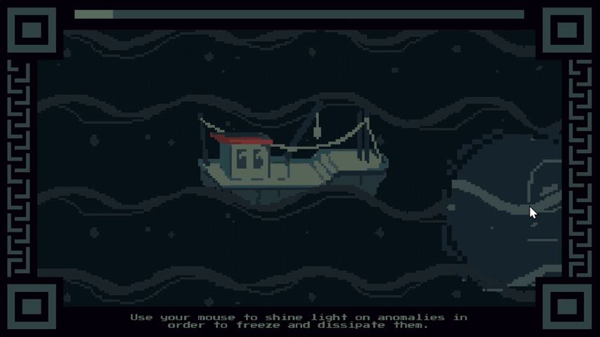
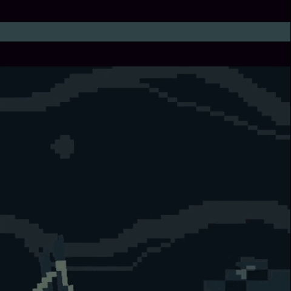
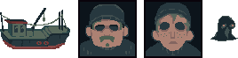

Commercial Fishing
May 2025About Game
Commercial Fishing is a one-minute survival game. Two fishermen on a night boat are surrounded by sea anomalies, and the player holds them off with a single searchlight. One hit on the boat ends the run.
➤ Entry for Mini Code For A Cause. Developed in 24 hours for the theme "You Only Get One."
➤ Role: Solo Developer & Artist
Solo Developer & Artist
I designed, programmed, and drew the entire game in Unity 2022.3 with C#.
- Built a mouse-driven searchlight that freezes and dispels enemies.
- Programmed an enemy spawner that sends anomalies toward the boat from all four screen edges.
- Implemented a one-minute survival timer with a progress bar and win and lose cutscenes on Unity Timeline.
- Wrote a typewriter dialogue system shared by the intro and ending scenes.
- Drew all 2D pixel art and animations.

Mechanics
Light and Enemy States
The searchlight follows the mouse with a lerp, so it trails slightly behind the cursor and takes skill to aim. Each anomaly moves toward the boat until the light touches it. It then freezes, and if the light holds on it for one second, it plays a dispel animation and is destroyed. If the light slips off early, the anomaly resumes its approach, so the player has to commit to each target.
Spawning and Win/Lose
A spawner places a new anomaly every two seconds at a random point just off one of the four screen edges. A progress bar fills over the minute; when it's full, spawning stops, the remaining enemies are cleared, and the win cutscene plays. If an anomaly reaches the boat, the camera shakes and the lose cutscene plays, with an option to restart.

// Moves the searchlight toward the mouse cursor each frame.// The lerp makes the light trail slightly behind the cursor,// so aiming it takes a bit of skill.public class FollowMouse : MonoBehaviour{ private Vector2 mousePos; // How quickly the light catches up to the cursor (set in the Inspector) [SerializeField] private float mouseFollowSpeed = 0.5f; void Update() { // Convert the cursor's screen position into world space mousePos = Camera.main.ScreenToWorldPoint(Input.mousePosition); // Close part of the gap between the light and the cursor each frame transform.position = Vector2.Lerp( transform.position, mousePos, Time.deltaTime * mouseFollowSpeed); }}// Each anomaly moves toward the boat until the searchlight touches it.// In the light it freezes; held there for maxLightTime seconds, it dispels.private void Update(){ // Approach state: move toward the boat and keep the light timer at zero if (isMoving) { lightTime = 0f; Vector3 pos = Vector3.MoveTowards( transform.position, target.transform.position, speed * Time.deltaTime); rb.MovePosition(pos); } // Caught state: count how long the anomaly has stayed in the light if (waitUntilDispel) { lightTime += Time.deltaTime; // Held long enough: play the dispel animation, which destroys the // anomaly through an animation event when it finishes if (lightTime >= maxLightTime) { anim.SetBool("dispel", true); } }}// The light touches the anomaly: freeze it and start the dispel timerprivate void OnTriggerEnter2D(Collider2D collision){ if (collision.CompareTag("Light")) { anim.SetBool("caught", true); isMoving = false; waitUntilDispel = true; }}// The light leaves before the timer finishes: the anomaly escapes// and resumes its approach, so the player has to commit to each targetprivate void OnTriggerExit2D(Collider2D collision){ if (collision.CompareTag("Light") && lightTime < maxLightTime) { isMoving = true; anim.SetBool("caught", false); }}Art
I drew all of the game's art as 2D pixel art.
- The fishing boat, with an idle animation.
- The sea anomaly, animated in three states: moving, caught in the light, and dispelling.
- Animated normal and dark wave backgrounds.
- Portraits of Bill and Phil, the dialogue frame, the cursor, and the pause screen.

I chose a gloomy, limited color palette (inspired by Dredge) to depict an atmospheric environment.